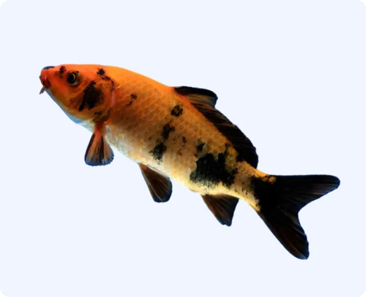

Рыба для пруда
Карп кои
Цена и наличие
- 6-10 см20 BYN / шт.В наличии
- 10-12 см25 BYN / шт.В наличии
- 12-15 см50 BYN / шт.В наличии
- 15-20 см90 BYN / шт.В наличии
- 20-25 см102 BYN / шт.В наличии
- 25-30 см192 BYN / шт.В наличии
- 30-35 см200 BYN / шт.В наличии
Данные на 23.11.2026.
Характеристики
- Окрас
- Золотистые, белые с красными пятнами, золотистые с черными вкраплениями, трехцветные
- Сезонность
- Апрель-август
- Возраст
- Сеголетки, годовики
- Максимальный вес
- До 20 кг
- Продолжительность жизни
- Обычно 25–50 лет при правильном содержании. Продолжительность жизни напрямую зависит от качества воды, питания, плотности посадки и профилактики заболеваний
- Половая зрелость
- В условиях умеренного климата обычно наступает примерно в 3–5 лет, при этом самцы, как правило, созревают раньше самок. В теплых условиях при интенсивном выращивании половое созревание может происходить быстрее
- Питается
- Карп кои — всеядная рыба. В естественном пруду он поедает личинок водных насекомых, червей, моллюсков, мелких ракообразных и зоопланктон, а также водоросли, мягкие части растений, семена и органический детрит. При декоративном содержании основу рациона должен составлять качественный полнорационный корм для кои
- Температура воды для активного питания и размножения
- Активное питание происходит примерно при 15–25 °C, а наиболее благоприятные условия для роста создаются при температуре выше 20 °C. Нерест обычно начинается после прогрева воды примерно до 18 °C, оптимальная температура для размножения составляет около 18–22 °C
- Условия пруда для содержания
- Карпам кои необходим просторный пресноводный пруд с эффективной механической и биологической фильтрацией, хорошей аэрацией и стабильными параметрами воды. Для небольшой группы взрослых кои желательно предусматривать водоем объемом от нескольких кубических метров; ориентир для взрослой рыбы — около 900–1000 литров воды на особь при эффективной фильтрации. Для круглогодичного содержания в Беларуси обязательно наличие достаточно глубокой незамерзающей зоны
- Рост
- Сеголетки 50-150 г, двухлетки 150-300 г, трехлетки 300-600 г
Описание
«Живые драгоценности из Японии», символ счастья и признак высокого статуса владельца, — все это относится к цветным карпам кои.
УСЛОВИЯ ОБИТАНИЯ
Карп кои — декоративная селекционная форма карпа, предназначенная прежде всего для содержания в садовых и специализированных кои-прудах. Это крупная, активная и долгоживущая рыба, поэтому небольшой декоративный водоем без полноценной системы фильтрации для длительного содержания взрослых кои не подходит. Особое значение имеет качество воды. В пруду необходимо поддерживать стабильную биологическую фильтрацию, достаточное содержание растворенного кислорода и не допускать накопления аммиака и нитритов. Подходящий диапазон pH находится примерно в пределах 6,5–8,5, при этом для рыбы особенно важна не только сама величина pH, но и отсутствие резких суточных изменений. Карпы кои активно плавают и нуждаются в свободном пространстве. Для небольшой группы рекомендуется пруд объемом не менее нескольких кубических метров, а для взрослых рыб необходимо заранее учитывать их будущий размер и нагрузку на систему фильтрации. Пруд для кои желательно делать глубиной более 90 см, а в климатических условиях Беларуси необходимо предусмотреть более глубокую незамерзающую зону для безопасной зимовки. Кои относятся к мирным рыбам и хорошо содержатся группой. Их можно содержать вместе с другими кои и совместимыми прудовыми видами при условии, что параметры воды подходят всем рыбам. При этом необходимо учитывать, что крупные кои активно конкурируют за корм и могут случайно травмировать значительно более мелкую декоративную рыбу. Перед запуском новых кои в основной пруд желательно проводить карантин в отдельной емкости в течение 4–6 недель. Это снижает риск занесения паразитарных, бактериальных и вирусных заболеваний в уже сформированную популяцию.
РАЗМНОЖЕНИЕ
Карпы кои способны самостоятельно размножаться в пруду при наличии половозрелых рыб и подходящих условий. В умеренном климате нерест обычно происходит в конце весны или начале лета после устойчивого прогрева воды примерно до 18–22 °C. Перед нерестом самцы начинают активно преследовать самок, особенно на мелководных участках. Сам процесс может быть достаточно интенсивным: крупная самка нередко сопровождается несколькими самцами, поэтому в ограниченном пространстве существует риск травмирования рыбы. Специальных гнезд карпы кои не строят. Самка выметывает большое количество клейкой икры, которая после наружного оплодотворения прикрепляется к водной растительности, корням, нерестовым щеткам и другим погруженным поверхностям. Крупная самка способна выметывать сотни тысяч икринок. После нереста взрослые карпы не охраняют икру и потомство. Они могут поедать как собственную икру, так и появившихся мальков, поэтому при целенаправленном разведении производителей после нереста отделяют от икры либо переносят нерестовый субстрат в отдельную емкость. При температуре около 20–23 °C развитие икры обычно занимает примерно 3 суток. После вылупления личинки некоторое время используют запас желточного мешка, а затем переходят на самостоятельное питание мелким зоопланктоном и стартовыми кормами. Окраска молоди не обязательно повторяет окраску родителей. Даже от высококачественных производителей получается большое количество мальков с различными цветами и рисунками, поэтому при профессиональном разведении кои проводят многократный отбор рыбы по форме тела, цвету и рисунку.
КОРМЛЕНИЕ
Карп кои — всеядная рыба, однако для стабильного роста, правильного формирования тела и поддержания яркой окраски основу рациона лучше составлять из полноценного специализированного корма для кои. Такой корм должен обеспечивать достаточное количество белка, жиров, углеводов, витаминов и минералов. В естественном пруду кои дополнительно поедают личинок насекомых, червей, моллюсков, мелких ракообразных, зоопланктон, водоросли и растительный материал. Они также могут объедать молодые побеги водных растений и активно исследовать дно в поисках пищи. Количество и состав корма необходимо корректировать по температуре воды. Наиболее активно кои питаются и растут при температуре примерно 20–25 °C. В теплый период корм можно давать небольшими порциями несколько раз в день, при этом рыбы должны съедать предложенное количество без длительного накопления остатков в воде. Осенью при снижении температуры обмен веществ постепенно замедляется. При температуре примерно 10–15 °C количество корма существенно уменьшают, а при устойчивом охлаждении воды примерно ниже 8–10 °C кормление обычно прекращают. Несъеденный корм в холодной воде особенно нежелателен, поскольку загрязняет пруд и увеличивает нагрузку на систему фильтрации. Перекармливание не ускоряет безопасный рост кои. Напротив, избыток пищи повышает концентрацию органических веществ, увеличивает нагрузку на биофильтр и может привести к ухудшению качества воды. Для быстрого и здорового роста одинаково важны полноценный корм, теплая вода, высокий уровень кислорода и эффективная фильтрация.
ЗИМОВКА
Карпы кои способны зимовать в открытом пруду в климатических условиях Беларуси, если водоем правильно спроектирован и не промерзает полностью. Для зимовки особенно важны достаточная глубина, стабильное качество воды и сохранение нормального газообмена под ледяным покровом. По мере охлаждения воды обмен веществ карпа кои постепенно замедляется. Рыбы становятся менее активными, проводят больше времени в глубоких участках пруда и значительно меньше питаются. При температуре ниже примерно 10 °C жизненные процессы замедляются настолько, что потребность в корме становится минимальной. Пруд должен иметь достаточно глубокую зимовальную зону, где температура воды остается более стабильной. Необходимо не допускать полного промерзания водоема и продолжительного дефицита растворенного кислорода. В зимний период особенно важно обеспечить газообмен и при необходимости использовать аэрацию или оборудование для поддержания незамерзающего участка поверхности. Сильное перемешивание всей толщи воды зимой нежелательно, поскольку оно может разрушать температурное расслоение и охлаждать более теплую придонную воду. Поэтому зимнюю аэрацию лучше организовывать так, чтобы она поддерживала газообмен, не создавая чрезмерной циркуляции в самой глубокой части пруда. Перед зимой желательно удалить избыток листьев, отмирающей растительности и другой органики. Ее разложение под ледяным покровом расходует кислород и ухудшает качество воды. Весной кормление возобновляют постепенно после устойчивого повышения температуры и возвращения нормальной пищевой активности рыб.